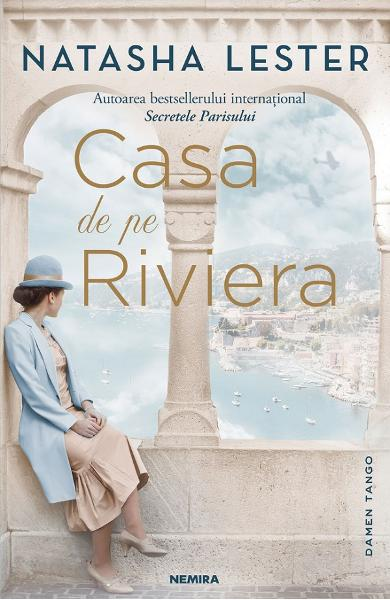

Casa de pe Riviera
Natasha Lester
1939: Nazistii cred ca Eliane nu intelege limba germana, nefacand altceva decat sa catalogheze operele de arta din Luvru si neavand habar ca mai-marii Reichului au organizat o adevarata campanie de jefuire a capodoperelor adapostite acolo. Se insala, insa. Fiindca tanara a invatat cum sa le descifreze mesajele secrete si transmite luptatorilor din Rezistenta toate informatiile vitale pe care acestea le contin. Eliane face un joc teribil de periculos. Oare s-ar cuveni sa aiba incredere in omul pe care l-a iubit candva incredintandu-i tainele descoperite? Dar daca acesta o va trada din nou? Nu are cum sa afle nimic sigur...